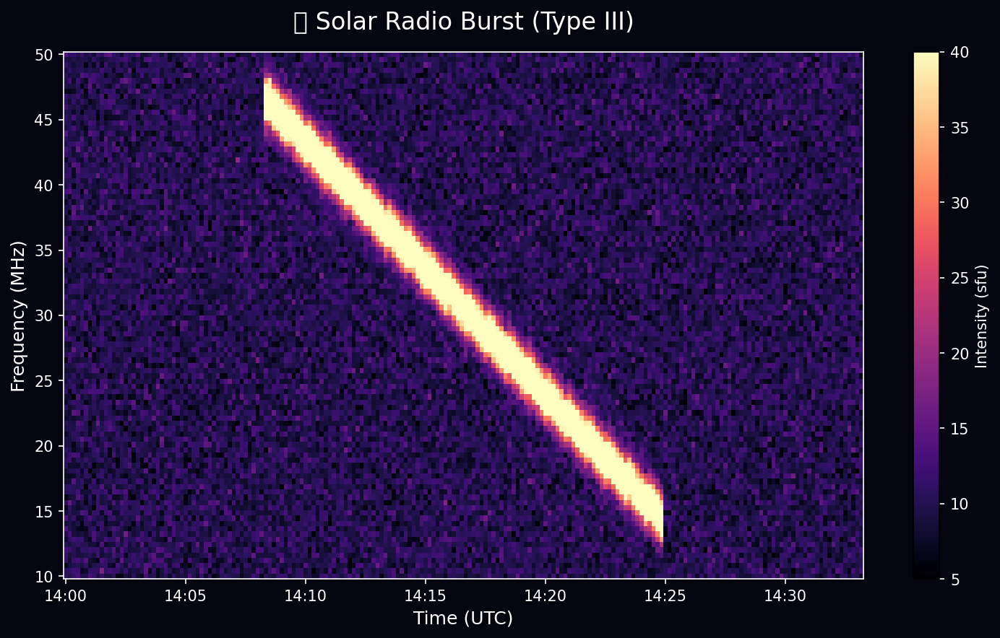
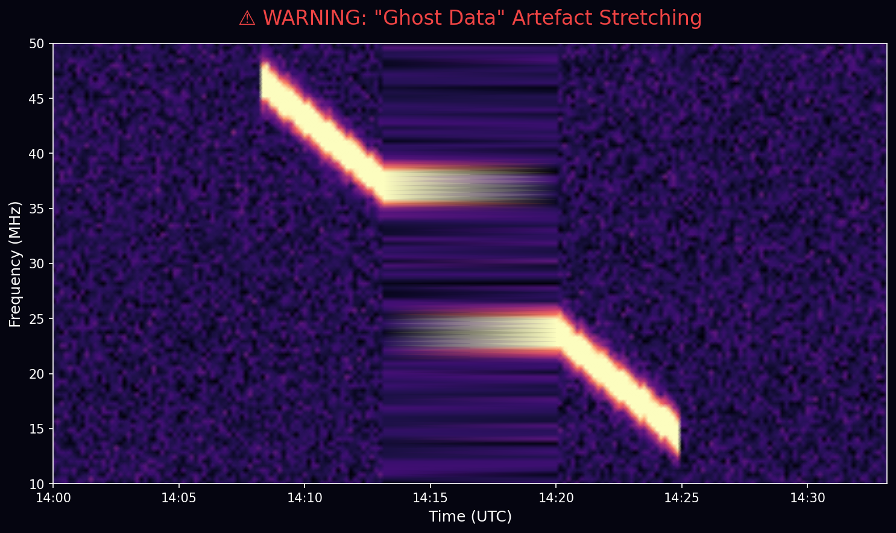
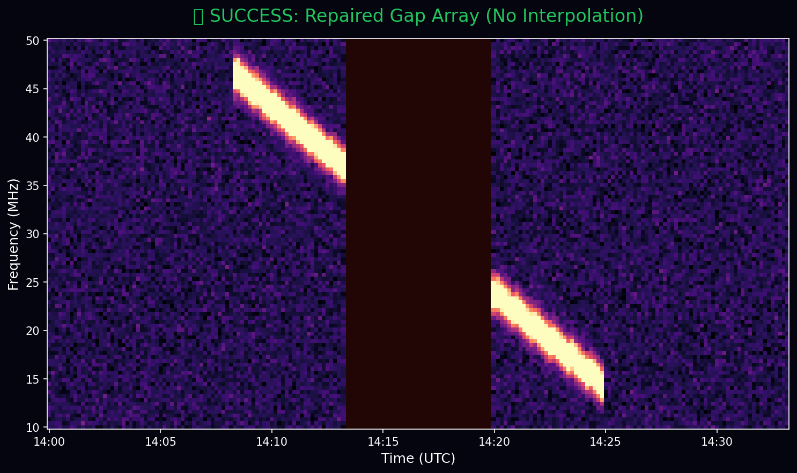

Imagine you are sitting in a quiet, dark observatory. Suddenly, a massive Coronal Mass Ejection (CME) rips away from the surface of the Sun. Millions of highly energized electrons go blasting through the solar system.
As these electrons travel, they emit intense, shrieking bursts of radio waves. Down on Earth, and out in deep
space, instruments like the Parker Solar Probe catch these signals. To analyze this incredible cosmic event
using Python, astronomers rely on a specialized library within the SunPy ecosystem:
radiospectra.
We use it to turn invisible radio waves into beautiful, colorful, dynamic visualizations called spectrograms.

You excitedly download the data to track the storm. You tell the computer to load the analysis array. But deep underneath the code... something is terribly wrong. The array is lost.
Right now, radiospectra stores this incredible cosmic data in incredibly "dumb"
NumPy arrays. It works like a simple grid of numbers. If you ask the data,
"What time did this huge burst happen?" it doesn't actually know. It just knows that the burst is
sitting at "Row 50, Column 100". It keeps the physical timestamps in a completely separate, disconnected list.
Then, disaster strikes. Your telescope loses connection to the satellite for exactly two hours. A huge gap appears in the data timeline.
When you try to plot this using standard Python tools, the plotting engine panics. Because the time list is disconnected from the data grid, the computer just stitches the flawed grid together anyway. The result? It takes signals from before the outage and smears them across the missing timeline. You are now looking at "ghost data"—an event that never actually happened. A scientist could write an entire research paper based on an optical illusion caused by bad code!

We have to stop hacking the code and fix the root cause. This summer, my ultimate mission is to create total API Parity.
When an astronomer loads a spatial image using standard SunPy tools (like sunpy.map.Map), the image
isn't dumb. It knows its exact coordinates in the universe. I want to build that exact same deep intelligence
into radiospectra so scientists can trust the tool completely without ever writing complicated
workarounds.
To save the data from being a disconnected grid, we need to completely rip out the old framework and replace it
with a highly advanced container called ndcube.NDCube.
By migrating to NDCube, we are equipping every single pixel of data with a World Coordinate System (WCS). Think of WCS as a cosmic GPS tracker for your data matrix. It securely binds the mathematical grid directly to physical reality.
The Math That Saves the Day:
We teach the pixel how to talk to the universe using an affine transformation matrix. It translates an empty
pixel index \( p \) directly into a physical continuum coordinate \( x \) (like UTC Time):
\[ x_i = \sum_{j=1}^{N} C_{ij} (p_j - p_{0,j}) + x_{0,i} \]
The code instantly learns the deep laws of physics. For highly non-linear radio instruments bridging away from simple scales, we take it a step further by mapping actual array telemetry into Astropy using ExtraCoords lookup tables.
Once we introduce this "Cosmic GPS", amazing things happen:
NaN padded $N+1$ boundaries, shattering the `pcolormesh` visualization grid (\( \Delta
t_i > C \cdot (1 + \epsilon) \)) and inherently stopping the visual teleportation of telemetry gaps.
Spectra object won't just
slice data; it will natively support complex, axis-aware operations like
scaling, reductions, and rebinning. Furthermore, because scientific research is always evolving, I am
building a flexible API that allows researchers to effortlessly plug in their own custom background
subtraction algorithms alongside our robust built-in methods.
scipy.ndimage.minimum_filter1d), we can automatically scrub out the noisy background static of
the galaxy in milliseconds, leaving only the pristine radio burst visible.

Transitioning the backbone of a major scientific library is not just about adding isolated features; it's about
paying off years of technical debt. By anchoring radiospectra to the
NDCube specification, we aren't just fixing bugs—we are building a powerful, reliable foundation
that future generations of solar radio astronomers can fundamentally trust.
But a powerful tool is useless without a good manual or robust stability. A core deliverable of my mission is to produce a rich, interactive Example Gallery using Jupyter Notebooks, heavily backed by strict Test-Driven Development (TDD) against real instrument data. Combined with comprehensive documentation and rigorous test coverage, this gallery will walk users through real-world workflows—from coordinate-based slicing to advanced background subtraction—ensuring the community can immediately harness these new capabilities.
Stay tuned over the coming months as I dive into the code and teach these numerical arrays the language of the universe. 🚀